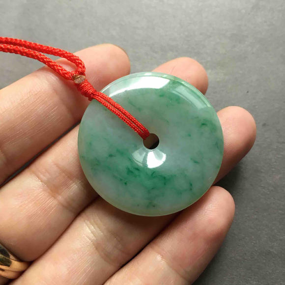
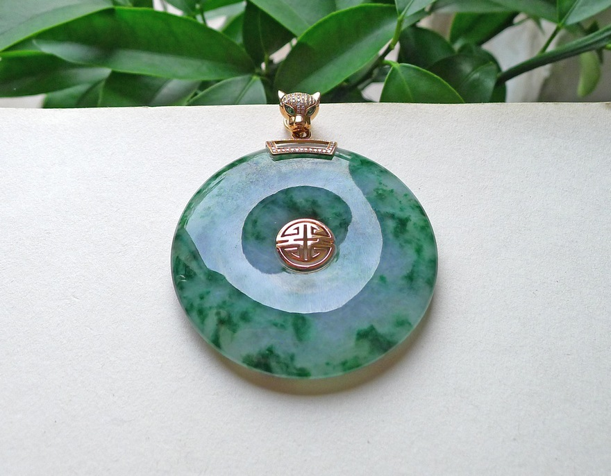
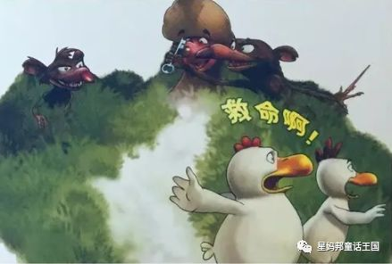
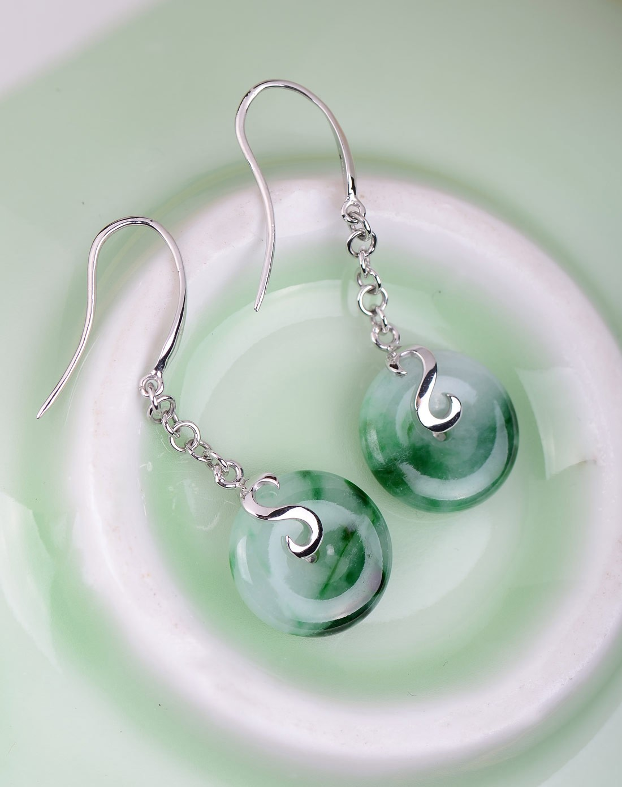

这是一个可以播放的故事
在线播放列表
故事开篇

在一个寒风凛冽的冬日傍晚，城市的喧嚣如往常一样，车水马龙，人来人往。主人公林宇失魂落魄地走在街头，他的眼神空洞，满心悲戚。就在不久前，他被相恋多年的女友无情抛弃，紧接着又失去了工作，接二连三的沉重打击让他不堪重负。
林宇拖着沉重如铅的双腿，一步步挪到了河边。望着那冰冷刺骨、波涛汹涌的河水，泪水不受控制地夺眶而出，过往的甜蜜回忆与如今的惨痛现实如走马灯般在他脑海中交替闪现。突然，一阵剧痛从胸口袭来，他捂住心口，缓缓地倒在了地上。
周围的路人发现了他，急忙拨打了急救电话，然而，一切都为时已晚。林宇因伤心过度，突发心肌梗塞，年轻的生命就此戛然而止。
他的灵魂悠悠荡荡，恍惚间，竟被一股神秘力量牵引，最终被困在了一枚祖传的平安扣之中。这平安扣质地温润，散发着柔和的光芒，平日里挂在林宇的胸口，是他最珍视的物件。此时，林宇的灵魂在这狭小的空间里，满心迷茫与恐惧，不知等待他的将是怎样未知的命运。
被困奇遇

在这无尽的黑暗与孤寂之中，时间仿佛失去了意义，林宇的灵魂沉浸在绝望的深渊，无法自拔。不知过了多久，突然，一抹微弱的光芒在远处闪烁，如同一颗划破夜空的流星。林宇像是抓住了救命稻草一般，拼尽全力向着光芒的方向飘去。
随着距离的拉近，光芒愈发耀眼，林宇终于看清，那光芒竟是来自一位白发苍苍、仙风道骨的老者。老者身着一袭古朴长袍，面容和蔼，眼神中透着洞察世事的深邃。他的周身散发着神秘的气息，仿佛知晓天地间所有的秘密。
老者见林宇前来，微微点头，轻声说道：“孩子，莫要惊慌，你我能在此相遇，便是缘分。” 林宇满心疑惑，又惊又喜，忙向老者询问这究竟是何处，自己为何会被困于此。
老者长叹一声，缓缓说道：“此地乃平安扣所化的空间，你尘世怨念过重，又与这平安扣羁绊颇深，灵魂才会被困。不过，既已相遇，我便助你一臂之力，改变这既定的命运。” 林宇听闻，眼中燃起一丝希望的火花，连忙跪地，向老者磕头求救。
老者抬手轻轻一挥，一道柔和的力量将林宇扶起，说道：“孩子，且随我来，你命中还有转机。” 说罢，老者带着林宇向着平安扣空间的深处走去，那里，似乎隐藏着改写命运的关键。
重生逆袭

重生之初
就在林宇满心绝望之时，那神秘老者轻轻一挥衣袖，一道耀眼光芒闪过，林宇只觉眼前一黑，便失去了意识。
当他再次醒来，发现自己竟回到了那个噩梦般的夜晚 —— 被女友抛弃的时刻。他环顾四周，熟悉的场景、熟悉的人，一切都如此真实，却又带着几分荒诞。女友苏瑶站在他面前，脸上依旧是那副冷漠绝情的模样，口中吐出的话语如同一把把利刃：“林宇，我们不合适，分手吧。”
林宇心中恨意滔天，前世的痛苦与屈辱涌上心头，但此刻，他的眼神却瞬间变得冷静而深邃。凭借着前世的记忆，他知晓苏瑶即将面临一场巨大的麻烦，而这场麻烦，正是他扭转局面的契机。
原来，苏瑶暗中挪用公款，为的是给她的新欢填补生意上的亏空。此事一旦败露，她必将身败名裂。林宇不动声色，暗中收集证据，在苏瑶还在得意忘形之时，将证据匿名交给了公司高层。
很快，公司开始彻查此事，苏瑶慌了神，试图找林宇求情，却发现林宇早已不是从前那个任她拿捏的软弱之人。在公司的会议室里，苏瑶面对确凿的证据，百口莫辩，最终被移送公安机关。
周围的人都惊呆了，他们从未见过如此果断、睿智的林宇，曾经那个被爱情冲昏头脑、一事无成的失败者，仿佛一夜之间脱胎换骨。而林宇看着苏瑶被带走，心中五味杂陈，这只是他复仇的第一步，他要让那些曾经伤害过他的人，都付出应有的代价。
成长崛起
解决了苏瑶的事情后，林宇深知，想要真正改变命运，必须充实自己。他凭借前世对市场的了解，开始涉足商业领域。利用业余时间，他学习各种商业知识，分析行业趋势，凭借着敏锐的洞察力，他发现了一个新兴行业 —— 环保科技的巨大潜力。
林宇果断辞去了原本那份毫无前途的工作，拿出自己仅有的积蓄，投身到环保科技的创业浪潮中。起初，困难重重，资金短缺、技术难题、人才匮乏，每一个问题都足以让他的创业梦夭折。但林宇没有退缩，他四处奔波，寻找投资，与科研团队日夜钻研技术，用真诚和理想打动了一批志同道合的伙伴。
终于，他的公司研发出了一款高效节能的环保产品，一经推出，便迅速占领市场，订单如雪花般飞来。短短几年间，林宇的公司便成为了行业内的领军企业，他也从一个落魄青年摇身一变，成为了备受瞩目的商业新星。
在事业腾飞的同时，林宇并没有忘记本心。他深知自己一路走来的艰辛，因此，当他看到身边有人陷入困境时，总是毫不犹豫地伸出援手。他资助贫困学生上学，为灾区捐款捐物，还帮助那些被生活压得喘不过气的创业者，给予他们资金和经验上的支持。
林宇的善举赢得了众人的赞誉，他收获了真挚的友情，身边聚集了一群有理想、有担当的朋友。他们一起努力，为社会创造更多的价值，林宇也在这个过程中，找到了真正的人生意义，成为了众人眼中的传奇人物。
情感纠葛
随着林宇的声名远扬，曾经抛弃他的那些人，开始重新审视自己的行为，心中懊悔不已。其中，就包括他的前女友苏瑶。苏瑶在狱中度过了一段艰难的时光，出狱后，她得知林宇如今的成就，心中的悔恨如潮水般涌来。
她找到林宇，泪流满面地向他忏悔：“林宇，我错了，我当初是瞎了眼才会离开你。求你看在我们曾经的情分上，给我一个机会吧。” 林宇看着眼前这个熟悉又陌生的女人，心中爱恨交织。曾经的他，爱她爱得死心塌地，却换来无尽的伤害；如今，她落魄至此，他的心中竟泛起一丝怜悯。
但林宇知道，有些伤口，一旦留下，便再也无法愈合。他冷冷地对苏瑶说：“过去的事，已经无法挽回。我希望你能好自为之，重新开始自己的人生。” 说完，他转身离去，留下苏瑶在原地，泣不成声。
而在林宇努力打拼的过程中，爱情也悄然降临。一位名叫林婉儿的女孩走进了他的世界。婉儿善良、温柔，她欣赏林宇的才华与坚韧，在林宇创业最艰难的时刻，给予了他无尽的支持与鼓励。
两人一起度过了许多美好的时光，林宇的心也渐渐被婉儿融化。然而，每当他想起前世的伤痛，心中便会涌起一丝恐惧。他害怕再次受到伤害，害怕失去这来之不易的幸福。
在爱情与恐惧的拉扯中，林宇陷入了迷茫。他不知道自己是否能够真正放下过去，全身心地投入到这段新的感情中。婉儿察觉到了林宇的内心挣扎，她没有逼迫，只是默默地陪伴在他身边，用行动告诉他：爱，是治愈一切的良药。
最终抉择

在林宇功成名就、爱情悄然降临之时，那神秘老者再次现身。老者的身影如鬼魅般出现在林宇的书房，依旧是那身古朴长袍，眼神深邃如渊。他静静地看着林宇，开口说道：“孩子，如今你已改变命运，收获了财富与爱情，你可还记得这一切的源头？”
林宇心中一凛，连忙跪地，向老者感恩道：“多谢前辈当年的救命之恩与再造之德，林宇此生难忘。” 老者微微摇头，长叹一声：“孩子，你与这平安扣的缘分，终有尽时。如今，你必须做出一个选择，是继续凭借平安扣的力量，享受这荣华富贵，还是放弃这一切，回归平凡，让灵魂得到真正的解脱。”
林宇听闻，心中大惊，他望着老者，眼中满是不舍与挣扎。这平安扣带给他的，不仅仅是重生的机会，更是如今的辉煌成就，若要放弃，谈何容易。但他又深知，这力量终究不属于他，长久以往，恐生变数。
老者见他犹豫，又道：“若你选择留下，平安扣的力量会逐渐侵蚀你的心智，让你迷失自我；若你选择放弃，虽会回归平凡，但却能拥有真正属于自己的人生。” 林宇的额头布满汗珠，双手紧握，内心如油煎般痛苦。
经过一番激烈的思想斗争，林宇缓缓抬起头，眼神中透着坚定：“前辈，我选择放弃。我虽贪恋这来之不易的一切，但我更想做回真正的自己，靠自己的努力去生活。” 老者闻言，脸上露出欣慰的笑容，轻轻点头：“好孩子，你终是悟了。”
说罢，老者抬手一挥，一道光芒闪过，平安扣从林宇的胸口缓缓飞起，悬浮在空中。林宇望着它，心中五味杂陈。光芒愈发耀眼，林宇只觉眼前一黑，便失去了意识。
当他再次醒来，发现自己正躺在医院的病床上，周围是刺鼻的消毒水味。医生和护士围在他身边，见他醒来，脸上露出惊喜的笑容：“太好了，你终于醒了，你已经昏迷了三天三夜，可把大家吓坏了。” 林宇环顾四周，心中一片茫然，那惊心动魄的重生经历，仿佛只是一场梦。
但当他看到床边摆放的那枚破碎的平安扣时，他知道，一切都是真实发生过的。林宇的嘴角微微上扬，露出一抹释然的笑容。他明白，自己的人生，将从此刻，重新开始。
故事尾声林宇出院后，卖掉了曾经与前女友共住的房子，告别了过去的一切。他回到了家乡，那个充满儿时回忆的小山村。在那里，他用自己剩余的积蓄，开了一家小小的书店，取名为 “拾光书屋”。
每天清晨，他伴着第一缕阳光打开店门，整理书架，让那些散发着墨香的书籍整齐排列。午后，阳光透过窗户洒在书页上，他泡上一杯清茶，与前来买书、看书的人分享阅读的感悟。夜晚，他伴着柔和的灯光，沉浸在书的世界里，书写着属于自己的故事。
偶尔，他会想起那段惊心动魄的重生之旅，心中感慨万千。但他知道，那只是人生长河中的一段插曲，如今的他，已找到了真正的幸福 —— 平淡而真实的生活。而那枚破碎的平安扣，被他小心地收藏起来，放在书架的最顶层，它是过去的见证，也是未来的警醒。每当有客人问起，林宇总会微笑着说：“这是一个关于重生与抉择的故事，也是我人生的宝贵财富。”
从此以后，林宇在这小山村里，守着他的书屋，伴着书香，度过了一个又一个宁静而美好的日子，他的故事，也在这山水之间，缓缓流传开来，成为人们口中一段充满传奇色彩的佳话。
在线下载列表
标签：
免责声明：本站所有信息均来源于互联网搜集，并不代表本站观点，本站不对其真实合法性负责。如有信息侵犯了您的权益，请告知，本站将立刻删除。